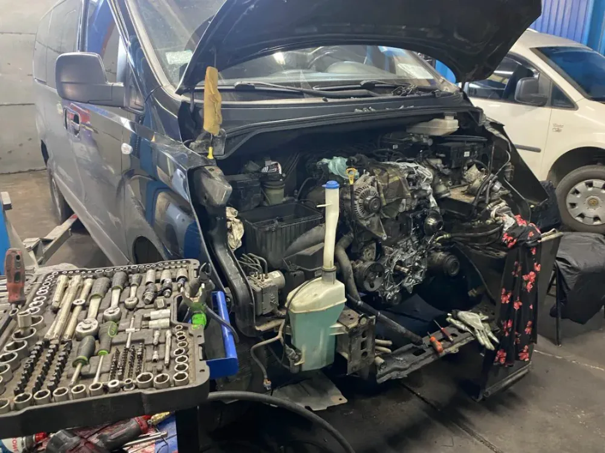

Комп’ютерна діагностика
Підключаємо сканер, читаємо помилки і перевіряємо, що за ними стоїть насправді. Після діагностики ви знаєте, що треба ремонтувати зараз, а що може почекати.
- Помилки двигуна та електроніки
- Перевірка датчиків і систем
- Огляд авто на підйомнику
- Пояснення простими словами